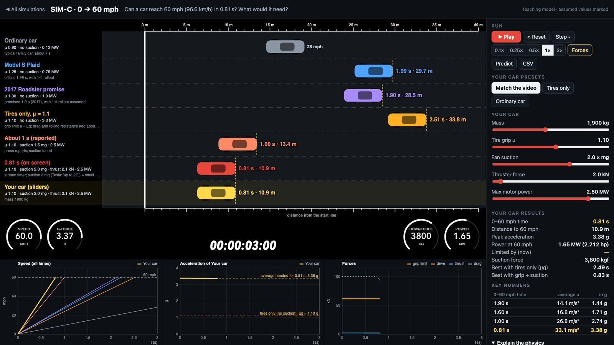
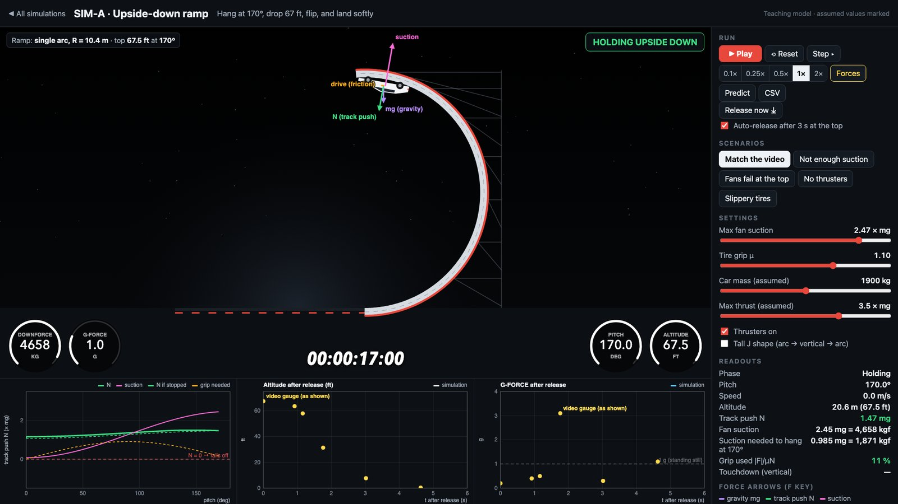
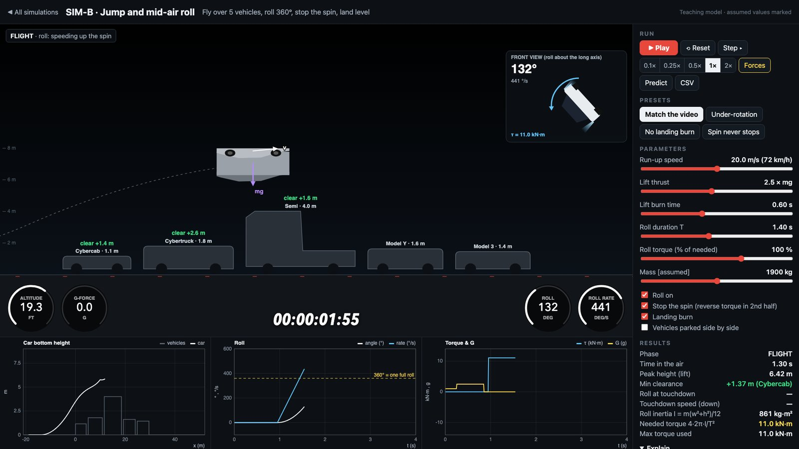
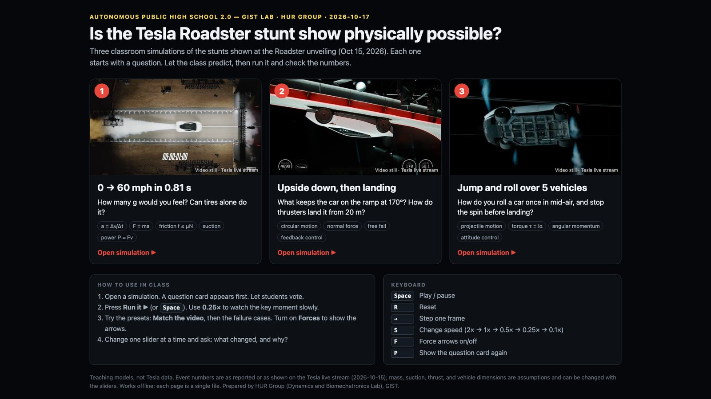

[2026/10/17] 자동차가 정말 이런 걸 할 수 있을까? — 물리로 따져 본 공중제비 자동차
작성자: 허필원
2026년 10월 17일, GIST에서는 고등학생들이 대학 연구실을 직접 찾아와 연구를 체험하는 "자율형 공립고 2.0 GIST Lab" 프로그램이 열렸다. 우리 연구실도 이 프로그램에 참여했는데, 본 실습에 앞서 내가 30~40분 정도 인트로 강의를 맡았다. 고등학생들의 관심을 끌 만한 이야깃거리를 고민하다가, 바로 전날 공개된 Tesla 새 Roadster의 시연 영상을 출발점으로 삼기로 했다. 이 글은 그날 강의 내용을 연구실 블로그를 찾아 주시는 분들을 위해 쉽게 다시 정리한 것이다. 강의 때 쓴 웹 시뮬레이션도 함께 공개하니, 글을 읽다가 직접 돌려 보시기 바란다.
이 인트로 강의의 출발점이 된 Tesla Roadster 공개 행사의 영상은 아래에서 볼 수 있다.

"신기하다"에서 멈추지 말고 "어떻게?"를 묻자
2026년 10월 15일(미국 시간), Tesla는 새 Roadster를 공개하면서 세 가지 묘기를 보여 주었다.
0→시속 60마일(약 97 km/h) 가속: 화면 속 타이머는 0.81초를 보여 주었다. 언론은 "약 1초"라고 보도했다.
거꾸로 매달리기: 휘어진 램프를 타고 올라가 거의 뒤집힌 상태(기울기 170°)로 꼭대기에 멈춰 매달려 있다가, 떨어지면서 공중에서 자세를 바로잡고 착지했다.
공중 회전: 차량 다섯 대 위를 날아 넘으면서 공중에서 한 바퀴 굴러 돌고 바퀴로 착지했다.
영상을 보면 누구나 "와!" 하게 된다. 하지만 공학자는 거기서 한 걸음 더 나간다. 이게 물리적으로 가능한가? 가능하다면 어떤 조건이 필요한가? 강의는 이 질문을 세 단계로 풀었다. 먼저 물리 법칙으로 필요한 힘을 계산하고, 다음으로 시뮬레이션으로 "만약 이렇다면?"을 시험해 보고, 마지막으로 제어(측정하고, 비교하고, 고치는 일)로 실제 기계가 계획대로 움직이게 만드는 방법을 살펴보았다.
한 가지 미리 밝혀 둘 점이 있다. 차의 무게, 팬의 힘, 추진기의 세기 같은 핵심 수치는 공개되지 않았다. 그래서 아래의 숫자들은 차 질량을 1,900 kg으로 가정하는 등 합리적인 가정 위에서 계산한 것이다. 물리 모델은 어떤 주장이 "가능한지"를 보여 줄 수 있지만, 그것이 "사실인지"는 독립적인 측정만이 보여 줄 수 있다.
장면 1: 1초 안에 시속 97 km
0.81초 만에 시속 97 km에 도달하려면 평균 가속도가 중력가속도의 약 3.4배(3.4 g)여야 한다. 몸무게 60 kg인 사람이라면 등받이가 약 200 kg짜리 물체에 해당하는 힘으로 등을 밀어 주는 셈이다. 일반 승용차가 힘차게 출발할 때가 0.3~0.4 g 정도이니, 엄청난 수치다.
여기서 학생들이 가장 놀라는 사실이 하나 있다. 차를 앞으로 미는 것은 엔진이 아니라 도로다. 모터가 바퀴를 돌리면 타이어가 도로를 뒤로 밀고, 그 반작용으로 도로가 타이어를 앞으로 민다. 이 힘이 마찰력이다. 그런데 마찰력에는 한계가 있다. 아무리 좋은 타이어라도 마찰력은 대략 "차가 도로를 누르는 힘"만큼이 최대다. 그래서 타이어만으로는 차 무게나 모터 출력과 상관없이 약 2.5초가 한계다. 1초 이내라는 기록은 타이어만으로는 불가능하다.
그럼 방법이 없을까? 비결은 차를 무겁게 만들지 않고 도로에 더 세게 누르는 것이다. 차 바닥의 팬이 차와 도로 사이의 공기를 빨아내면, 주변 공기가 차를 도로 쪽으로 꾹 누른다. 이 방식은 차가 서 있을 때도 작동한다(1978년 F1에도 이런 "팬 카"가 있었다). Tesla는 이 흡입 장치가 차 무게의 "최대 2배"까지 끌어당긴다고 했다. 이 경우 타이어가 낼 수 있는 힘이 3배로 늘어나고, 계산하면 약 0.83초가 나온다. 여기에 압축 공기를 뒤로 뿜는 작은 추진기를 조금 더하면 0.81초가 된다.
| 차 | 0→60 mph | 평균 가속도 |
|---|---|---|
| 일반 승용차 | 7.0초 | 0.39 g |
| Model S Plaid (공식) | 1.99초 | — |
| 타이어만 쓴 이론 한계 | 약 2.5초 | 1.1 g |
| "약 1초" (보도) | 1.00초 | 2.74 g |
| 화면 타이머 | 0.81초 | 3.38 g |
결론은 이렇다. 타이어만으로는 불가능하다. 하지만 차 무게의 두 배쯤 되는 흡입력, 약간의 추진력, 약 2 MW(일반 승용차의 20배쯤)의 모터 출력이 있다면 원리적으로는 가능하다.

▶ 가속 시뮬레이션 직접 해 보기: 여섯 대의 기준 차량과 내가 만든 차("Your car")가 경주한다. 흡입력을 0으로 두고 출력만 올려 보거나, 질량을 두 배로 늘려 보자. 왜 기록이 줄지 않을까?
장면 2: 거꾸로 매달려 멈추기, 그리고 착지
롤러코스터가 루프 꼭대기에서 떨어지지 않는 것은 빠르게 달리기 때문이다. 그런데 Roadster는 천천히 올라가서 꼭대기에서 아예 멈췄다. 속도의 도움이 전혀 없으니, 차를 붙잡아 주는 것은 팬의 흡입력뿐이다.
170° 기울기에 멈춰 있으려면 두 가지 조건이 필요하다.
떨어지지 않으려면: 흡입력이 차 무게의 약 0.99배 이상이어야 한다.
미끄러지지 않으려면: 흡입력이 차 무게의 약 1.14배 이상이어야 한다. 이쪽이 더 까다롭다. 흡입력이 부족한 차는 떨어지기 전에 먼저 미끄러진다.
영상 속 계기판은 꼭대기에서 "DOWNFORCE 4,697 kg"을 보여 주었다. 엄밀히 말하면 kg은 질량 단위이고, 여기서는 "4,697 kg짜리 물체의 무게만큼의 힘(kgf)"을 뜻한다. 차 질량을 1,900 kg으로 가정하면 차 무게의 약 2.5배로, 필요한 값보다 넉넉하다.
문제는 그다음이다. 약 20 m(7층 건물 높이)에서 그냥 떨어지면 2초 만에 시속 72 km로 땅에 부딪힌다. 그 2초 동안 차는 뒤집힌 몸을 바로 세우고, 떨어지는 속도도 거의 0으로 줄여야 한다. 사람이 손으로 할 수 있는 일이 아니다. 컴퓨터가 1초에도 여러 번씩 쉬지 않고 측정하고 → 목표와 비교하고 → 추진기를 조절하는 일, 즉 피드백 제어가 이 일을 해낸다. 자전거를 탈 때 넘어지려는 쪽으로 핸들을 살짝 틀어 균형을 잡는 것과 같은 원리다. 떨어지는 속도는 처음에는 거의 자유낙하로 두었다가 마지막에 강하게 감속하는 방식으로 줄이는데, SpaceX가 로켓을 착륙시킬 때도 이렇게 한다.
솔직히 말하면, 우리 모델이 영상과 완전히 같지는 않다. 시뮬레이션의 낙하 시간은 약 3.1초인데, 영상에서는 약 4.6초가 걸렸다. 실제 제어 방식을 모르기 때문이다. 강의에서는 이 차이를 오히려 좋은 질문거리로 삼았다. "영상과 더 비슷하게 만들려면 무엇을 바꿔야 할까?"

▶ 램프 시뮬레이션 직접 해 보기: "Not enough suction", "Fans fail at the top", "No thrusters" 같은 실패 시나리오도 들어 있다. 꼭대기에 멈춰 있을 때 흡입력 슬라이더를 천천히 내려 보면, 1.14배 아래에서 미끄러지고 0.99배 아래에서 떨어지는 것을 볼 수 있다.
장면 3: 공중에서 한 바퀴 굴러 돌기
공중에서는 바퀴로 아무것도 할 수 없다. 차를 돌리려면 양옆의 추진기를 서로 반대 방향으로 뿜어 회전력(토크)을 만들어야 한다. 이때 중요한 것은 돌기 시작하는 것보다 멈추는 것이다.
회전하는 물체는 외부에서 방해하지 않으면 계속 돈다(각운동량 보존). 추진기를 그냥 꺼 버리면 차는 계속 돌다가 옆면이나 지붕으로 착지한다. 그래서 정확히 한 바퀴를 돌고 바로 서려면, 처음 절반 동안은 한쪽으로 밀어 회전을 가속하고 나머지 절반 동안은 반대쪽으로 밀어 회전을 멈춰야 한다. 이런 방식을 뱅뱅(bang-bang) 제어라고 부른다. 우리 모델에서는 1.4초 동안 한 바퀴를 돌고, 가장 빠를 때는 1초에 거의 한 바퀴 반을 돈다. 두 배 빨리 돌려면 네 배의 회전력이 필요하다.
같은 원리는 일상에서도 볼 수 있다. 피겨 스케이터는 팔을 몸쪽으로 당겨 더 빨리 돈다. 떨어지는 고양이는 외부의 도움 없이 몸통 앞뒤를 서로 다르게 비틀어서 몸을 뒤집고 발로 착지한다.

▶ 점프·회전 시뮬레이션 직접 해 보기: "Under-rotation"(회전력 부족)과 "Spin never stops"(멈추는 힘 없음) 시나리오를 "Match the video"와 비교해 보자.
자동차에서 로봇으로
이 이야기를 굳이 로봇 연구실에서 한 데는 이유가 있다. 세 장면에 나온 물리와 제어는 걷는 로봇과 사람의 몸에도 똑같이 적용된다.
차를 앞으로 미는 것이 도로이듯, 걷거나 달릴 때 우리를 앞으로 미는 것도 땅이 발을 밀어 주는 힘(지면 반력)이다. 발이 미끄러지는지 버티는지도 같은 마찰 법칙이 정한다.
떨어지는 차를 바로 세운 피드백 제어는, 넘어지려는 휴머노이드 로봇이 균형을 되찾는 원리와 같다.
공중 회전을 멈추는 원리는 로봇이 공중제비를 돌고 착지할 때도 그대로 쓰인다.
위험한 동작은 먼저 시뮬레이션에서 수없이 시험해 본다. 다만 시뮬레이션은 어디까지나 모델이어서, 현실과 늘 차이가 있다(sim-to-real gap). 우리 램프 시뮬레이션이 영상과 다르게 착지한 것처럼.
우리 연구실은 이런 물리와 제어를 바탕으로 로봇 의족, 고관절·하지 외골격(웨어러블 로봇), 휴머노이드 로봇, 상지 재활 로봇, 식사 보조 로봇, 소아 보행 재활 로봇 등을 연구하고 있다. 결국 "자동차가 이런 걸 할 수 있을까?"라는 질문은 "로봇이, 그리고 사람의 몸이 어떻게 움직이는가?"라는 질문과 이어져 있다.
직접 해 보기
시뮬레이션 세 개는 웹 브라우저에서 바로 실행된다. 설치할 것은 없다.

각 시뮬레이션은 "예측해 보기" 질문으로 시작한다. 답을 먼저 고른 뒤 Run it을 눌러 확인해 보자.
키보드: Space 재생/일시정지, R 처음부터, F 힘 화살표 보기.
해 볼 만한 질문
빙판(마찰계수 약 0.1)에서 타이어만으로 0→97 km/h 하려면 몇 초가 걸릴까?
달에서는 중력이 지구의 1/6이다. 팬은 여전히 도움이 될까? 추진기는?
램프 꼭대기에서 팬이 꺼지면 어떤 일이 벌어질까?
마무리
인트로 강의 뒤에는 우리 연구실 김민석 학생(석박사통합과정)이 본 강의를 맡았다. 휴머노이드 로봇이 사람의 동작 데이터와 시뮬레이션 속 연습(강화학습)으로 걷고 움직이는 법을 배우는 과정을 소개하고, 학생들이 직접 실습해 보는 시간을 가졌다. 자동차 묘기에서 시작한 이야기가 로봇의 균형과 학습으로 자연스럽게 이어진 하루였다.
눈을 반짝이며 질문해 준 고등학생 여러분, 그리고 이런 기회를 마련해 준 GIST에 감사드린다. 다음에 멋진 영상을 보게 되면, 한 번쯤 이렇게 물어보시길 바란다. "정말 가능할까? 어떻게?"